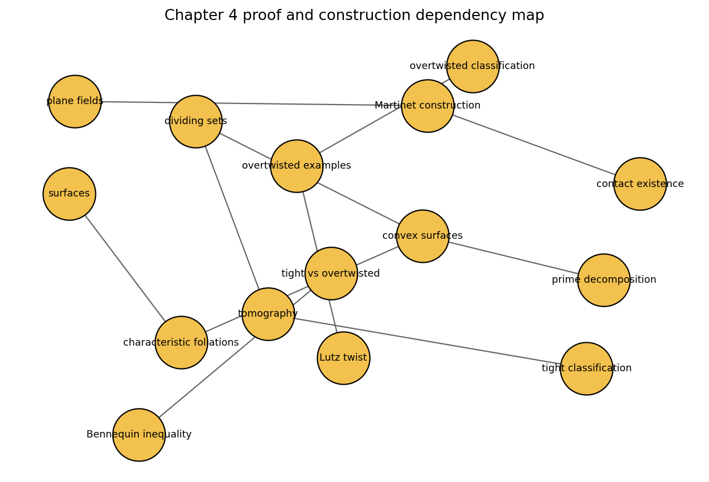

Contact Structures On 3-Manifolds
Existence, plane-field control, surface data, and the fork between overtwisted flexibility and tight rigidity.
Build
Martinet construction, Lutz twists, open books.
Detect
Characteristic foliations, convex surfaces, dividing sets.
Classify
Bennequin bounds, overtwisted classification, tight anchors.
